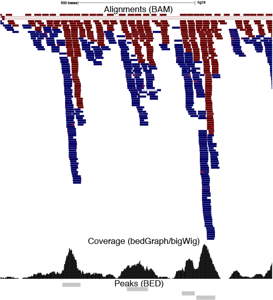

Class 4: Genomic Interval Analysis part 1
Jay Hesselberth
2018-11-08
class-4.RmdGenomic Interval Data
- Introduce genome-wide data with the UCSC genome browser and ENCODE chromatin data
- Summarizing genomic datatsets as intervals and signals
- Intersecting gene models, SNP databases, and Chip-Seq data
Visualizing genomics data with the UCSC genome browser
The UCSC genome browser provides a web interface for viewing, downloading, and querying genomics data. Numerous datasets are available to view, including:
- Gene annotations (GENCODE)
- Gene expression data (GTEx)
- SNP databases (1000 genomes)
- Functional genomics data (ENCODE)
- User-uploaded datasets
Genomics data summarizes to intervals
The genome can be described as a coordinate system:

Nucleotides are represented in 1-D positional coordinates:
chr1 ATGCTAGCTGATCGTAGCTG...
0123456789...
chr2 ATGCTAGCTGATCGTAGCTG...
0123456789...
chr3 ATGCTAGCTGATCGTAGCTG...
0123456789... BED format
The BED file format defines genomic regions of interest:
#BED3 (3-columns)
#chrom start end
chr1 0 4
chr1 1 6
chr1 7 13and can define genomic features of interest:
- read alignments
- gene coordinates
- positions of genetic variation (i.e. SNPs, indels)
#BED6
#chrom start end name score strand
chr1 0 4 ELAVL1_binding_site 100.00 +
chr1 1 6 microRNA 10 -
chr1 7 13 alternative_exon 1 .
interval 1: ----->
interval 2: <----
interval 3:<-->
chr1:ATGCTAGCTGATCGTAGCTG...
Obtaining interval data
BED files can be downloaded from many sources:
The UCSC table browser provides an easy interface for downloading many types of genomic data as
BED(and other) format files.The ENCODE project provides a data access portal to download experimental data from numerous types of high-throughput experiments (
BEDfiles here).
Bedgraph files define genomic signals
The bedGraph format is an extension of the BED format commonly used to summarize single nucleotide read coverage from ChIP-Seq, CLIP-Seq, mRNA-Seq, and other genome-wide data.
read 1: ------
read 2: -----
read 3: ----
chr1 ATGCTAGCTGATCGTAGCTG...
Coverage 12221101111110000000
chrom start end value
chr1 0 1 1
chr1 1 4 2
chr1 4 6 1
chr1 7 13 1Exploring ChIP-Seq Data
Simplified sequencing analysis workflow
| Step | File Format | Description |
|---|---|---|
| Get read sequences | FASTQ |
Sequencing Reads |
| Align to genome | BAM/SAM |
Sequence Alignment Map Alignment information for each read (BAM = binary file) |
| Summarize Coverage | bedGraph/bigWig |
Count number of reads covering every position in genome i.e. read coverage (bigWig = binary file) |
| Define enriched regions | BED |
Find regions with enriched coverage. i.e.(“Peaks” of signal) |

ChIP-Seq Peaks in Human Cells
The ENCODE project produced hundreds of ChIP-Seq datasets across dozens of humans cell lines. A compendium of ChIP-Seq experiments from 161 DNA-binding proteins were aggregated into a single BED file, available from the UCSC genome browser. We will use this dataset (see description) to explore interval analysis methods.
First we will discuss a few methods for loading the data into R.
Load data from file that is included in eda package
library(tidyverse)
library(eda)
file_name <- system.file("extdata",
"wgEncodeRegTfbsClusteredV3.bed.gz",
package = "eda")
tf_bed <- read_tsv(file_name, col_names = F)
tf_bed
#> # A tibble: 4,380,444 x 4
#> X1 X2 X3 X4
#> <chr> <int> <int> <chr>
#> 1 chr1 10073 10329 ZBTB33
#> 2 chr1 10149 10413 CEBPB
#> 3 chr1 16110 16390 CTCF
#> 4 chr1 29198 29688 TAF1
#> 5 chr1 29275 29591 GABPA
#> 6 chr1 89795 90051 USF1
#> 7 chr1 91156 91580 CTCF
#> 8 chr1 104859 105089 CTCF
#> 9 chr1 138850 139274 CTCF
#> 10 chr1 235541 235877 SP1
#> # ... with 4,380,434 more rowsFixing column names
new_names <- c(
"chrom",
"start",
"end",
"TF"
)
colnames(tf_bed) <- new_names
tf_bed
#> # A tibble: 4,380,444 x 4
#> chrom start end TF
#> <chr> <int> <int> <chr>
#> 1 chr1 10073 10329 ZBTB33
#> 2 chr1 10149 10413 CEBPB
#> 3 chr1 16110 16390 CTCF
#> 4 chr1 29198 29688 TAF1
#> 5 chr1 29275 29591 GABPA
#> 6 chr1 89795 90051 USF1
#> 7 chr1 91156 91580 CTCF
#> 8 chr1 104859 105089 CTCF
#> 9 chr1 138850 139274 CTCF
#> 10 chr1 235541 235877 SP1
#> # ... with 4,380,434 more rowsIn class exercises
- Which TF has the most binding-sites (AKA peaks)?
group_by(tf_bed, TF) %>%
summarize(total = n()) %>%
arrange(desc(total))
#> # A tibble: 161 x 2
#> TF total
#> <chr> <int>
#> 1 CTCF 162209
#> 2 CEBPB 146873
#> 3 EP300 138836
#> 4 POLR2A 134990
#> 5 FOS 131528
#> 6 RAD21 119039
#> 7 JUND 97411
#> 8 MYC 96959
#> 9 FOXA1 89906
#> 10 MAX 85949
#> # ... with 151 more rows- Which TF covers the most basepairs in the genome?
mutate(tf_bed,
peak_length = end - start) %>%
group_by(TF) %>%
summarize(total_bps = sum(peak_length)) %>%
arrange(desc(total_bps))
#> # A tibble: 161 x 2
#> TF total_bps
#> <chr> <int>
#> 1 POLR2A 89294720
#> 2 CTCF 58703098
#> 3 EP300 48927186
#> 4 CEBPB 40528940
#> 5 FOS 40220836
#> 6 MYC 37956453
#> 7 MAX 33399586
#> 8 JUND 32234838
#> 9 GATA2 30382649
#> 10 RAD21 29887860
#> # ... with 151 more rows- Which TF has the broadest or the narrowest binding-sites on average?
mutate(tf_bed,
peak_length = end - start) %>%
group_by(TF) %>%
summarize(mean_bps = mean(peak_length)) %>%
arrange(desc(mean_bps))
#> # A tibble: 161 x 2
#> TF mean_bps
#> <chr> <dbl>
#> 1 EZH2 983.
#> 2 ZNF274 894.
#> 3 RBBP5 763.
#> 4 KAP1 755.
#> 5 POLR3G 709.
#> 6 SETDB1 684.
#> 7 SMARCA4 683.
#> 8 SMARCC1 681.
#> 9 SMARCB1 668.
#> 10 POLR2A 661.
#> # ... with 151 more rows
mutate(tf_bed,
peak_length = end - start) %>%
group_by(TF) %>%
summarize(mean_bps = mean(peak_length)) %>%
arrange(mean_bps)
#> # A tibble: 161 x 2
#> TF mean_bps
#> <chr> <dbl>
#> 1 CTCFL 164.
#> 2 BATF 210.
#> 3 PBX3 210.
#> 4 FOSL1 214.
#> 5 POU5F1 214.
#> 6 SRF 214.
#> 7 NFE2 225.
#> 8 EGR1 238.
#> 9 NANOG 239.
#> 10 FAM48A 240.
#> # ... with 151 more rows
mutate(tf_bed,
peak_length = end - start) %>%
group_by(TF) %>%
summarize(mean_bps = mean(peak_length)) %>%
arrange(desc(mean_bps)) %>%
slice(c(1, nrow(.)))
#> # A tibble: 2 x 2
#> TF mean_bps
#> <chr> <dbl>
#> 1 EZH2 983.
#> 2 CTCFL 164.Integrating multiple datasets
We can now use the BED format as a common file to investigate multiple genome-wide datatypes. Imagine that we had two bed files named (x and y). How would we go about finding intervals in x that overlap with y.
x
#> # A tibble: 3 x 3
#> chrom start end
#> <chr> <dbl> <dbl>
#> 1 chr1 25 50
#> 2 chr1 40 80
#> 3 chr1 100 125
y
#> # A tibble: 1 x 3
#> chrom start end
#> <chr> <dbl> <dbl>
#> 1 chr1 30 75This is not very easy to do with dplyr or base R, and would be very slow.
How to efficiently analyze intervals and signals?
To efficiently query interval data a set of algorithms are used to speed up the querying process. Examples here: Interval Tree or ChromSweep.
These algorithms have been implemented in a set of tools specific for analyzing genomic interval data.
R-Packages
-
valr(Interval analysis with atidyversestyle syntax) -
GRanges(Interval analysis used in manyBioConductorpackages)
Introduction to valr
valr was developed to simplify genomic interval analysis and replace the need for learning the command line. We will use valr today to introduce genomic interval analysis.
Reading in BED data
valr assigns common column names to facilitate comparisons between tibbles. All tibbles will have chrom, start, and end columns, and some tibbles from multi-column formats will have additional pre-determined column names. See the read_bed() documentation for additional details.
# get path to bed file
bed_file <- system.file("extdata",
"6fields.bed.gz",
package = "valr")
# read in bed, indicate the number of columns with n_fields
bed <- read_bed(bed_file, n_fields = 6)
bed
#> # A tibble: 10 x 6
#> chrom start end name score strand
#> <chr> <int> <int> <chr> <chr> <chr>
#> 1 chr1 11873 14409 DDX11L1 3 +
#> 2 chr1 14361 19759 WASH7P 10 -
#> 3 chr1 14406 29370 WASH7P 7 -
#> 4 chr1 34610 36081 FAM138F 3 -
#> 5 chr1 69090 70008 OR4F5 1 +
#> 6 chr1 134772 140566 LOC729737 3 -
#> 7 chr1 321083 321115 DQ597235 1 +
#> 8 chr1 321145 321207 DQ599768 1 +
#> 9 chr1 322036 326938 LOC100133331 3 +
#> 10 chr1 327545 328439 LOC388312 1 +Find intersecting intervals with bed_intersect()
One of the most common operations in interval analysis is to determine if intervals in 1 BED file overlap with intervals in another file. This operation can be used to answer many questions including:
- Does a SNP overlap with a protein-coding region?
- Which genes does a transcription factor bind to?
- Does an RNA binding protein bind to 3’UTRs?
The bed_intersect() function in valr finds intervals that overlap in two datasets and reports the intersecting intervals.
Imagine that we have a set of two bed files that we have read into R as x and y.
x
#> # A tibble: 3 x 6
#> chrom start end name score strand
#> <chr> <dbl> <dbl> <chr> <dbl> <chr>
#> 1 chr1 25 50 A 0 +
#> 2 chr1 40 80 B 0 -
#> 3 chr1 100 125 C 0 -
y
#> # A tibble: 1 x 6
#> chrom start end name score strand
#> <chr> <dbl> <dbl> <chr> <dbl> <chr>
#> 1 chr1 30 75 C 0 -We can find intersecting intervals by passing x ans y to bed_intersect()
bed_intersect(x, y)
#> # A tibble: 2 x 12
#> chrom start.x end.x name.x score.x strand.x start.y end.y name.y score.y
#> <chr> <dbl> <dbl> <chr> <dbl> <chr> <dbl> <dbl> <chr> <dbl>
#> 1 chr1 25 50 A 0 + 30 75 C 0
#> 2 chr1 40 80 B 0 - 30 75 C 0
#> # ... with 2 more variables: strand.y <chr>, .overlap <int>
bed_intersect(x, y, suffix = c("_xfile", "_yfile"))
#> # A tibble: 2 x 12
#> chrom start_xfile end_xfile name_xfile score_xfile strand_xfile
#> <chr> <dbl> <dbl> <chr> <dbl> <chr>
#> 1 chr1 25 50 A 0 +
#> 2 chr1 40 80 B 0 -
#> # ... with 6 more variables: start_yfile <dbl>, end_yfile <dbl>,
#> # name_yfile <chr>, score_yfile <dbl>, strand_yfile <chr>,
#> # .overlap <int>
x %>%
bed_intersect(y)
#> # A tibble: 2 x 12
#> chrom start.x end.x name.x score.x strand.x start.y end.y name.y score.y
#> <chr> <dbl> <dbl> <chr> <dbl> <chr> <dbl> <dbl> <chr> <dbl>
#> 1 chr1 25 50 A 0 + 30 75 C 0
#> 2 chr1 40 80 B 0 - 30 75 C 0
#> # ... with 2 more variables: strand.y <chr>, .overlap <int>valr functions respect groups established by group_by(). For example to only intersect intervals if they are on the same strand, group_by() strand prior to intersecting.
x <- group_by(x, strand)
y <- group_by(y, strand)
bed_intersect(x, y)
#> # A tibble: 1 x 12
#> chrom start.x end.x name.x score.x strand.x start.y end.y name.y score.y
#> <chr> <dbl> <dbl> <chr> <dbl> <chr> <dbl> <dbl> <chr> <dbl>
#> 1 chr1 40 80 B 0 - 30 75 C 0
#> # ... with 2 more variables: strand.y <chr>, .overlap <int>valr includes many functions for manipulating, comparing, and randomizing interval data. The documentation contains a list of all of the available functions.
How many SNPs in TF binding sites?
First obtain a bed file of SNPs:
library(valr)
snp_file <- system.file("extdata",
"hg19.snps147.chr22.bed.gz",
package = "valr")
snps <- read_bed(snp_file,
n_fields = 6)
snps
#> # A tibble: 10,000 x 6
#> chrom start end name score strand
#> <chr> <int> <int> <chr> <chr> <chr>
#> 1 chr22 16053247 16053248 rs587721086 0 +
#> 2 chr22 16053443 16053444 rs80167676 0 +
#> 3 chr22 16055964 16055965 rs587706951 0 +
#> 4 chr22 16069373 16069374 rs2154787 0 +
#> 5 chr22 16069782 16069783 rs1963212 0 +
#> 6 chr22 16100513 16100514 rs8140563 0 +
#> 7 chr22 16114622 16114623 rs558374111 0 +
#> 8 chr22 16115181 16115182 rs567521927 0 +
#> 9 chr22 16115377 16115378 rs538733846 0 +
#> 10 chr22 16121639 16121640 rs544560983 0 +
#> # ... with 9,990 more rowssnps_in_tfs <- bed_intersect(tf_bed, snps)
snps_in_tfs
#> # A tibble: 8,851 x 10
#> chrom start.x end.x TF.x start.y end.y name.y score.y strand.y
#> <chr> <int> <int> <chr> <int> <int> <chr> <chr> <chr>
#> 1 chr22 1.69e7 1.69e7 CTCF 1.69e7 1.69e7 rs131… 0 +
#> 2 chr22 1.69e7 1.69e7 CTCF 1.69e7 1.69e7 rs575… 0 +
#> 3 chr22 1.69e7 1.69e7 CEBPB 1.69e7 1.69e7 rs575… 0 +
#> 4 chr22 1.69e7 1.69e7 SMC3 1.69e7 1.69e7 rs575… 0 +
#> 5 chr22 1.70e7 1.70e7 NR3C1 1.70e7 1.70e7 rs237… 0 +
#> 6 chr22 1.70e7 1.70e7 TAF1 1.70e7 1.70e7 rs536… 0 +
#> 7 chr22 1.71e7 1.71e7 RBBP5 1.71e7 1.71e7 rs223… 0 +
#> 8 chr22 1.71e7 1.71e7 MAX 1.71e7 1.71e7 rs223… 0 +
#> 9 chr22 1.71e7 1.71e7 UBTF 1.71e7 1.71e7 rs223… 0 +
#> 10 chr22 1.71e7 1.71e7 SAP30 1.71e7 1.71e7 rs223… 0 +
#> # ... with 8,841 more rows, and 1 more variable: .overlap <int>How close are SNPs to transcription start sites?
The bed_closest() function finds the closest intervals between two sets of intervals.
First read in a BED file that contains genes in the human genome (hg19 build).
gene_file <- system.file("extdata",
"hg19_genes.bed.gz",
package = "eda")
genes <- read_bed(gene_file,
n_fields = 6)
genes
#> # A tibble: 55,006 x 6
#> chrom start end name score strand
#> <chr> <int> <int> <chr> <chr> <chr>
#> 1 chr1 11868 14362 LOC102725121 3 +
#> 2 chr1 11873 14409 DDX11L1 3 +
#> 3 chr1 14361 29370 WASH7P 11 -
#> 4 chr1 17368 17436 MIR6859-1 1 -
#> 5 chr1 17368 17436 MIR6859-2 1 -
#> 6 chr1 17368 17436 MIR6859-3 1 -
#> 7 chr1 17368 17436 MIR6859-4 1 -
#> 8 chr1 30365 30503 MIR1302-2 1 +
#> 9 chr1 30365 30503 MIR1302-9 1 +
#> 10 chr1 30365 30503 MIR1302-10 1 +
#> # ... with 54,996 more rowsNext we’ll generate a set of transcription start sites for each gene. The start site depends on the strand of the interval. Here for simplicity we will only look at intervals from the plus strand. If you want to keep the minus strand you need to use ifelse() in the mutate() call to conditionally define the start and end based on strand.
tss <- filter(genes, strand == "+") %>%
mutate(end = start + 1)
tss
#> # A tibble: 28,035 x 6
#> chrom start end name score strand
#> <chr> <int> <dbl> <chr> <chr> <chr>
#> 1 chr1 11868 11869 LOC102725121 3 +
#> 2 chr1 11873 11874 DDX11L1 3 +
#> 3 chr1 30365 30366 MIR1302-2 1 +
#> 4 chr1 30365 30366 MIR1302-9 1 +
#> 5 chr1 30365 30366 MIR1302-10 1 +
#> 6 chr1 30365 30366 MIR1302-11 1 +
#> 7 chr1 69090 69091 OR4F5 1 +
#> 8 chr1 323891 323892 LOC100132287 3 +
#> 9 chr1 323891 323892 LOC100132062 3 +
#> 10 chr1 323891 323892 LOC100133331 4 +
#> # ... with 28,025 more rowsLastly, we will use the bed_closest() tool to find the closest TSS to each SNP.
bed_closest(snps, tss) %>%
select(chrom:strand.x, name.y, .overlap, .dist)
#> # A tibble: 14,019 x 9
#> chrom start.x end.x name.x score.x strand.x name.y .overlap .dist
#> <chr> <int> <int> <chr> <chr> <chr> <chr> <int> <int>
#> 1 chr22 16053247 1.61e7 rs58772… 0 + BMS1P… 0 103831
#> 2 chr22 16053443 1.61e7 rs80167… 0 + BMS1P… 0 103635
#> 3 chr22 16055964 1.61e7 rs58770… 0 + BMS1P… 0 101114
#> 4 chr22 16069373 1.61e7 rs21547… 0 + BMS1P… 0 87705
#> 5 chr22 16069782 1.61e7 rs19632… 0 + BMS1P… 0 87296
#> 6 chr22 16100513 1.61e7 rs81405… 0 + BMS1P… 0 56565
#> 7 chr22 16114622 1.61e7 rs55837… 0 + BMS1P… 0 42456
#> 8 chr22 16115181 1.61e7 rs56752… 0 + BMS1P… 0 41897
#> 9 chr22 16115377 1.61e7 rs53873… 0 + BMS1P… 0 41701
#> 10 chr22 16121639 1.61e7 rs54456… 0 + BMS1P… 0 35439
#> # ... with 14,009 more rows
bed_closest(snps, tss) %>%
filter(abs(.dist) < 50) %>%
select(chrom:strand.x, name.y, .overlap, .dist)
#> # A tibble: 14 x 9
#> chrom start.x end.x name.x score.x strand.x name.y .overlap .dist
#> <chr> <int> <int> <chr> <chr> <chr> <chr> <int> <int>
#> 1 chr22 21043817 2.10e7 rs3730… 0 + POM121L… 0 25
#> 2 chr22 21319416 2.13e7 rs1120… 0 + AIFM3 0 1
#> 3 chr22 21319416 2.13e7 rs1120… 0 + AIFM3 0 1
#> 4 chr22 23229961 2.32e7 rs6003… 0 + IGLL5 0 -2
#> 5 chr22 23229961 2.32e7 rs6003… 0 + IGLL5 0 -2
#> 6 chr22 25423930 2.54e7 rs1191… 0 + KIAA1671 0 10
#> 7 chr22 26908525 2.69e7 rs1473… 0 + LOC1005… 0 -28
#> 8 chr22 31090785 3.11e7 rs7971… 0 + OSBP2 0 7
#> 9 chr22 38005057 3.80e7 rs1305… 0 + GGA1 0 -11
#> 10 chr22 38142198 3.81e7 rs1179… 0 + TRIOBP 0 42
#> 11 chr22 38142198 3.81e7 rs1179… 0 + TRIOBP 0 42
#> 12 chr22 38203871 3.82e7 rs5995… 0 + GCAT 0 40
#> 13 chr22 38203871 3.82e7 rs5995… 0 + GCAT 0 40
#> 14 chr22 46156445 4.62e7 rs6030… 0 + MIR4762 0 -42Exercises
The Encode project has performed
eCLIPexperiments to map RNA binding protein (RBP) binding sites for > 100 RBPs. Go to the Encode website, search foreCLIPexperiments, select an RBP eClip experiment, and load aBEDfile (bed narrowPeak format) with the binding sites into R using just the url. Use theread_narrowPeak()function fromvalr. Make sure that the file was generated using thehg19genome build, and that you do not select theeCLIP mock inputsamples, which are negative controls. Display the bed tibble that you pulled from the Encode database and give a one to two sentence summary about the known functions of the RBP.Use
bed_intersect()and some dplyr functions to determine how manyeCLIPpeaks are found in genes and how many are intergenic. (see the documentation on theinvertargument forbed_intersect()). Use thehg19_genes.bed.gzbed file as your gene bed file (location shown below). Explain in the interpretation whether or not the RBP primarily binds to known (geneic) or unannotated (intergeneic) regions.
Parse the output from question 2 to determine which gene has the most binding sites for your
RBP.Use another function from
valr(overview and documentation here to study a relationship between your eClip binding sites and genes in thegenebed file. Explain your question and answer. Somevalrfunctions require agenomefile, which indicates the lengths of the chromosomes.You can access this file as shown below.
Quiz
Create an RMarkdown document and answer the questions from the Exercises section. Write your answers in the text, and print the final tibbles that your code produced that gave you the answer. Submit your final document as “Quiz 3” by Friday at 10 PM.
Your submitted document must knit to HTML without errors. I.e., when you click the “Knit” button, the document should build and display and HTML page.